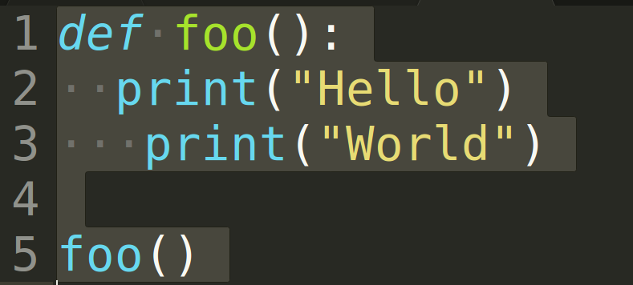

Keyboard shortcuts:
N/СпейсNext Slide
PPrevious Slide
OSlides Overview
ctrl+left clickZoom Element
If you want print version => add '
?print-pdf' at the end of slides URL (remove '#' fragment) and then print.
Like: https://wwwcourses.github.io/...CourseIntro.html?print-pdf
Python Intro. Syntax. Basic Data Types.
Created for

Iva E. Popova, 2024,

Get familiar with Python Language

picture source: @imgur.com
from If programming languages were essays...
{kind=link}
History and versions
- Creator: Guido van Rossum
- Named after Monty Python's Flying Circus comedy show.
- Python 1.0 - January 1994
- Python 2.0 - October 2000
- Python 3.0 - December 2008
- Reference: Active Python Releases @python.org
What's the use of Python?
- Python is a general-purpose programming language, used for:
- Web and Internet Development
- System administration (incl. cloud)
- Data Science, Big Data, Machine Learning
- Scientific computing
- Education
- Mobile apps development
- Embedded devices (incl. Raspberry Pi, Arduino, ...)
Python Interpreter
- Python is an interpreted language
- An interpreter is a program that directly executes the instructions in a high-level language, without converting it into machine code
- A compiler is a program that translates the source code into byte/machine code, and then execute it.
- Contemporary interpreters, like Python, use internal compiler to optimize their work.
{kind=link}
Python implementations/distributions
Python is an open source project: Python's github
- CPython - the official Python distribution.
- PyPy - faster and compliant with Python2 and Python 3
- Jython - Python for the Java Platform.
- IronPython - the Python programming language for the .NET Framework.
- Pyjs - contains a Python-to-JavaScript compiler, an AJAX framework and more.
What's in a program
| Bulgarian | Python | |
|---|---|---|
| novel | <=> | program |
| paragraph | <=> | block |
| sentences | <=> | instructions |
| types of sentences (declarative, imperative,...) | <=> | types of instructions (statements, expressions) |
| grammar rules (can be ambiguous) | <=> | grammar rules (could not be ambiguous) |
What's in a Python program
- A program consists of set of instructions, which are executed by the computer.
- In Python, we write each instruction on a new line.
- Instructions which performs one task are separated as a
block. - In Python the block is not separated by braces, as in other programming languages, but by same indentation of the instructions in it.
Write your first Python Program using JupyterLab
- Launch JupyterLab
- Create new notebook and name it
hello_world.ipynb - Then write next code into a code cell, but write your name inside quotes:
my_name = 'anonymous'
print('Hello, ', my_name)
The Zen of Python
import this
The Zen of Python, by Tim Peters
Beautiful is better than ugly.
Explicit is better than implicit.
Simple is better than complex.
Complex is better than complicated.
Flat is better than nested.
Sparse is better than dense.
Readability counts.
Special cases aren't special enough to break the rules.
Although practicality beats purity.
Errors should never pass silently.
Unless explicitly silenced.
In the face of ambiguity, refuse the temptation to guess.
There should be one-- and preferably only one --obvious way to do it.
Although that way may not be obvious at first unless you're Dutch.
Now is better than never.
Although never is often better than *right* now.
If the implementation is hard to explain, it's a bad idea.
If the implementation is easy to explain, it may be a good idea.
Namespaces are one honking great idea -- let's do more of those!
Or just read it here: The Zen of Python
Clean syntax
- Statements are terminated by EOL (new line), not by semicolons!
- Though, you can use semicolons if you wish
- Block of statements is wrapped by the same indentation, not by curly braces
- You can use spaces or tabs for indent.
- Mixing spaces with tabs can lead to errors or bugs.
Python syntax vs JavaScript syntax demo
- Both programs deal with same task: to find the sum and product of array
numbers = [1, 2, 3, 4]
product = 1
for i in numbers:
product *= i
total = sum(numbers)
print(total, product)
var numbers = [1, 2, 3, 4],
total = 0,
product = 1;
for (i = 0; i < numbers.length; i += 1) {
total += numbers[i];
product *= numbers[i];
}
console.log(total, product)
- Other examples for comparing Python vs other languages you can find: rosettacode.org
Same indent!
{kind=link}
This code will lead to IndentationError
Do not mix space and tabs

This code will lead to IndentationError
Wrong indentation can cause bugs!

Can you spot the bug?
Comments
Comments
Why to comment our code?
- Python interpreter ignores every part of a program, which is marked as a "comment"
- Comments are used to explain and/or summarize a part of our program in a more readable manner
- For debugging purposes - when we need fast to ignore a block of code
- For other meta information about the program (programme name, author, date, etc.)
- A well commented program is more readable and maintainable
How to comment our code?
- Single line comment:
# - every line which starts with
#(hash tag) is a comment and is ignored py Python interpreter
# this is a just a comment: no print("whatever") will happens
print("this will be printed, of course")
### a more semantic example for comment:
# check if a triangle with sides (3,4,5) is a Pythagorean:
print(3**2 + 4**2 == 5**2)
Reference
PEP8 - CommentsData Types Introduction
Data Types Introduction
- Programming is about manipulating data
- Each programming language defines its data types and the corresponding operations which can be performed on each data type.
- In Python, each data type literal is represented internally as object
Numeric Data Types
Numeric Data Types
- In Python we can use integer, floating point and complex numbers
- Numbers are immutable data type!
- Most arithmetic operations are natively defined in Python.
- More complex math functions are defined in the math module
integer numbers
we can use positive and negative integers:
# positive integer literal:
>>> 42
42
>>> +42
42
# negative integer literal:
>>> -42
-42
floating point numbers
we can use positive and negative floating point numbers
>>> 3.1234
3.1234
>>> -0.255
-0.255
# leading zero can be skipped:
>>> .44
0.44
>>> -.55
-0.55
>>>
Underscores in Numeric Literals
- As of Python 3.6 you can use underscores in numeric literals to improve readability of long numbers
>>> 1_000_000 + 2_000_000
3000000
arithmetic operations
- Python supports the standard arithmetic operations:
- Numeric Types@python docs
The division operator "/" in python2 returns the integer part(i.e. works like Floor division), while in python3 it returns the float result
Example: arithmetic operations
>>> 5-3
2
>>> 5*3
15
>>> 5/3
1.6666666666666667
>>> 5//3
1
>>> 5%3
2
Example: python3 vs python2 division
>>> 5/3
1
>>> 5/3
1.6666666666666667
>>> 5//3
1
Python3 adds the "//" operator for Integer division
Floating Point Arithmetic: Issues and Limitations
- Decimal numbers are represented in binary system.
- Most decimal fractions cannot be represented exactly as binary fractions, which leads to peculiar results
- Reference: Floating Point Arithmetic: Issues and Limitations @python.org
print(0.1+0.2)
# OUTPUT:
# 0.30000000000000004
the math module
- math module is native to every python distribution.
- to use its functions you only have to import it in your program:
- math — Mathematical functions @python docs
import math
# do something with math
Built-in math functions
Example: math module methods
>>> import math
>>>
>>> math.pi
3.141592653589793
>>> math.floor(math.pi)
3
>>> math.pow(2,3)
8.0
>>> math.sqrt(9)
3.0
>>> math.ceil(2.9)
3
>>> math.ceil(2.1)
3
>>> math.floor(2.9)
2
>>> math.floor(2.1)
Example: math built-in functions
>>> round(2.51)
3
>>> round(2.49)
2
>>> max(1,2,3)
3
>>> min(1,2,3)
1
>>> abs(2-5)
3
Strings in Python
Strings in Python
Definition
- Strings are immutable sequences of Unicode code points (will be discussed further).
- Single-line strings literal should be closed in single or double quotes
- No difference between single or double quoted strings!
- Multi-line strings literal should be closed in triple single or double quotes
Examples
>>> "this is a single line string"
'this is a single line string'
>>> 'another single line string with UTF charactes like üç∑'
'another single line string with UTF charactes like üç∑'
>>> 'but can not be spred in multiple lines
File "", line 1
'but can not be spred in multiple lines
^
SyntaxError: EOL while scanning string literal
Examples
>>> """infact you can -
... if you use these triple quotes"""
'infact you can - \nif you use these triple quotes'
>>> '''or these triple quotes
... can separate multiline without errors'''
'or these triple quotes\ncan separate multiline without errors'
Strings operations
Strings operations
concatenation: +
The operation is defined only when both operands are string, I.e. Python can not concatenate apples with oranges:
#string concatenation with '+':
>>> "ala" + "bala"
'alabala
>>> "1" + "2"
'12'
>>> "1" + 3
Traceback ...
TypeError: cannot concatenate 'str' and 'int' objects
repetition: *
One of the operands must be string, the other - integer
>>> "-" * 10
'----------'
>>> "1" * 10
'1111111111'
>>> ">hello<" * 3
'>hello<>hello<>hello<'
>>> "a" * "3"
Traceback ...
TypeError: can't multiply sequence by non-int of type 'str'
String Methods
# string methods:
>>> "ada".capitalize()
'Ada'
>>> "alabala".count("a")
4
>>> "Alabala".count("a")
3
>>> "AlabAla".find("a")
2
>>> "alabala".replace("a", "o")
'olobolo'
>>> "one,two,three".split(",")
['one', 'two', 'three']
What a method is will be discussed further!
For now, you can try to look at the docs: String Methods @docs.python.org
Variables
Variables
What is a variable in Python?
- A name (identifier) for "container" (placed in RAM) in which values can be stored and retrieved
- When we say that we set value in a variable, it should be understood as to write a value into the corresponding container.
- In Python we speak about name binding, when we assign a value to variable.
- We can get the variable value, i.e. to read the content of the corresponding container
A very simplified view of variables in RAM
x = 99
y = 3.141516
first_name = "ada"
sur_name = "byron"
num_list = [1,2,3,4,5]

Identifiers rules
- Variables names should follow next rules:
- Start with letter or underscore
- Followed by zero or more letters, underscores and digits
- Variable names are case-sensitive
- Identifiers and keywords @python docs
Naming Conventions
- Function names should be lowercase, with words separated by underscores as necessary to improve readability.
- Variable names follow the same convention as function names.
- mixedCase is allowed only in contexts where that's already the prevailing style (e.g. threading.py), to retain backwards compatibility.
- PEP 8 (Function and Variable Names)
example
x = 99
print("x = ", x)
first_name = "ada"
print("first_name = ", first_name)
print("first_name = ", First_name) #NameError: name 'First_name' is not defined
sur-name = "byron" #SyntaxError: can't assign to operator
Name binding
- Name binding is the association between a name and an a value
- Note, that all values in Python are represented as objects
- We can bind a value to a name with the
assignmentoperator (=) - We can check the unique identity of an object by the
id()built-in function. - CPython uses the object's memory address for the unique id
a = 2
print(id(a))
# 9413216
Name binding

String Interpolation
String Interpolation
Before Python 3.6
- Before Python 3.6 we have to use the concatenation operator when we want to display some string and some variables interpolated into it.
- Python (before v.3.6)do not support variables interpolation in strings like in bash/Perl/PHP/...
# not possible in Python!!!
$name = "Iva";
print("Hello $name !")
Hello Iva !
Literal String Interpolation (f-strings)
- Python 3.6 added "f-strings" which provide a way to embed expressions inside string literals, using a minimal syntax
- More on f-strings:
- Formatted String Literals @python tutorial
- Format String Syntax @python docs
value = 42
# str.format() method:
'The value is {}.'.format(value)
# f-strings:
f'The value is {value}'
Examples
user_name = input("hi, what's your name: ")
user_surname = input("will you tell me your sur name?:")
print(f"Nice to meet you, {user_name} {user_surname} !")
Task: modify the program, such that the user names will be displayed capitalized
Escape Sequences
- The backslash (\) character is used to escape characters that otherwise have a special meaning, such as newline, backslash itself, or the quote character.
- With escape sequence we can insert characters that are illegal in a string, like quotes or new line symbol.
- The most used escape sequences are given bellow:
| escape character | result |
|---|---|
| \' | Single Quote |
| \" | Double Quote |
| \n | New Line |
| \t | Tab |
| \\ | Backslash |
Example
print('|Jhoh\'s pub|')
print('|line1\nline2|')
print('|abc\t123|')
#OUTPUT
|Jhoh's pub|
|line1
line2|
|abc 123|
HW
HW - Body Mass Index calculator
The problem
- Calculate your body mass index (BMI) with Python, given the formula:
BMI = W / (H*H)
where: - W = weight_in_kilogram
- H = height_in_meters
- Your program should outputs the result rounded to 2 digits after the decimal point.
- Try to think of a solution, which will be readable enough and easy to maintain in future (you can use comments and semantic variable names)
- write your code in
HW/BMI.pyfile - Tip: You can use the python's build-in round() function, like:
>>> round(2.1457, 2)
2.15
>>> round(1.4234,2)
1.42
>>> round(1.4284,2)
1.43